随着《“数据要素X”三年行动计划(2024-2026)》等一系列政策出台，企业数据资产“入表”成为大势所趋，完成从自然资源到经济资产的跨越。模型是集成大规模高质量数据集、强大计算资源、精心设计神经网络架构为一体的数据价值产物，也是企业的重要战略资源。模型资产的版权保护、流通交易、安全治理是激活数据要素价值的有效路径。由于模型存在形式特殊，导致模型确权困难、交易缺乏可信基础、应用监管溯源效率低，引发模型所有者对于模型安全的顾虑，形成模型“不愿流通、不想流通、不敢流通”的困境。模型资产面临版权难保障、主体难可信、交易难监管、应用难溯源的问题。1) 版权难保障：模型作为数据特殊表现形式，权属难以保障，导致数据产权确认技术难题；2) 主体难可信：跨行业融合的商业模式下，不同领域间往往不互信，模型资产登记主体身份难可信，需要可信技术支撑模型流通的业务场景。 3) 交易难监管：模型交易有不法分子将获得的模型作恶(未授权转售、未授权商用)且卖方无法识别问责。4) 应用难溯源：模型可能会被不可信的用户滥用，需要保证生成内容可追溯，尤其是减少生成式模型的恶意使用。
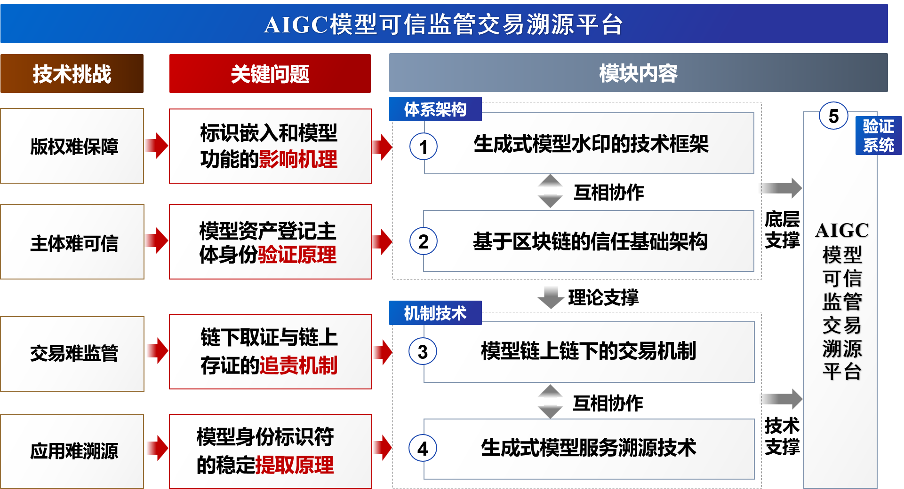
本作品《AIGC模型可信监管交易溯源平台》以模型流通中存在的关键问题为牵引，从体系架构、机制技术、验证系统三个层次确定5项研究模块，围绕版权难保障、主体难可信、交易难监管、应用难溯源四个方面开展研究。以基于生成式模型水印的技术框架和基于区块链的信任基础设施作为底层支撑、模型链上链下的交易机制和生成式模型服务溯源技术作为技术支撑，建立AIGC模型可信监管交易溯源平台。
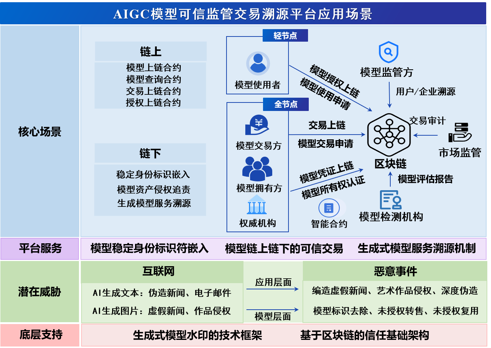
《AIGC模型可信监管交易平台》核心场景以生成式模型水印技术框架、基于区块链的信任基础架构作为底层支持，针对模型安全、内容安全的潜在威胁，开发了模型稳定身份标识符嵌入、模型链上链下的可信交易、生成式模型服务溯源机制的平台服务，实现了了稳定身份标识符嵌入、模型资产侵权追责、生成式模型服务溯源。
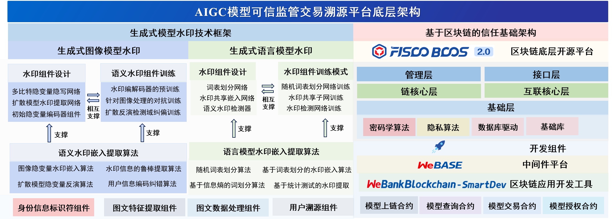
本项目的特色和创新之处体现在以下四个方面：
第一，提出了基于“区块链+模型水印”在模型交易/模型授权场景下保证模型版权可验证、模型交易可溯源、模型授权可监管的服务框架，是首个针对模型流通场景下的AIGC模型交易、授权、监管的方案。
第二，提出面向AIGC模型水印的技术框架，将唯一身份标识符稳定地嵌入生成式模型中，实现水印承载性、鲁棒性、保真性三方面的动态平衡。
第三，提出链上链下模型资产主体可信、模型版权可验证的模型交易机制和针对模型交易作恶(未授权转售、未授权商用)的追责机制，保证链上链下模型交易的安全性、可信性和合规性。
第四，提出了生成式模型的溯源机制，旨在针对生成式模型的使用过程进行全面追溯，结合链上存证链下取证、生成式模型水印等多层次手段，有效防止不可信用户滥用生成式模型进行虚假新闻编造、艺术作品侵权等有害行为，保证生成式模型可监管、可溯源。
模型稳定身份标识符嵌入
模型交易必须在保障模型获得有效保护的条件下进行，
急需解决交易过程中两方面的威胁。一方面，模型交易必须有着明确的合法知识产权保证。该模型必须是在合法数据集上通过
合法训练方式产生的合法模型，不包含任何非法的内容，不提供非法的服务。恶意方可能对模型进行未授权转售、未授权商用、生成非法内容，危害正常的模型交易。另一方面，交易的模型受到自身的威胁限制。生成的内容在法律层面上难以界定权属范围且难以监管，对于交易模型的非法使用威胁着健康的交易环境。生成式人工智能的匿名性和决策逻辑的模糊性，使传统的法律责任归属原则遭遇前所未有的挑战。生成式人工智能模型，
通过大规模训练数据集进行训练，能够生成与真实世界难以区分的文本、图像或音频等内容。
然而，当这些生成的内容触碰法律红线时，如发布诽谤信息、未经授权使用他人智力成果或传播误导性内容，由于这些假新闻是由人工智能模型生成的，缺乏直接人为操作的证据链，使得追责变得极为困难。即使能够确认是人工智能生成的内容，由于人工智能模型的匿名性和决策逻辑的复杂性，找到背后的操纵者或恶意使用者也变得异常艰难，这不仅是技术上的挑战，也是法律上的难题。
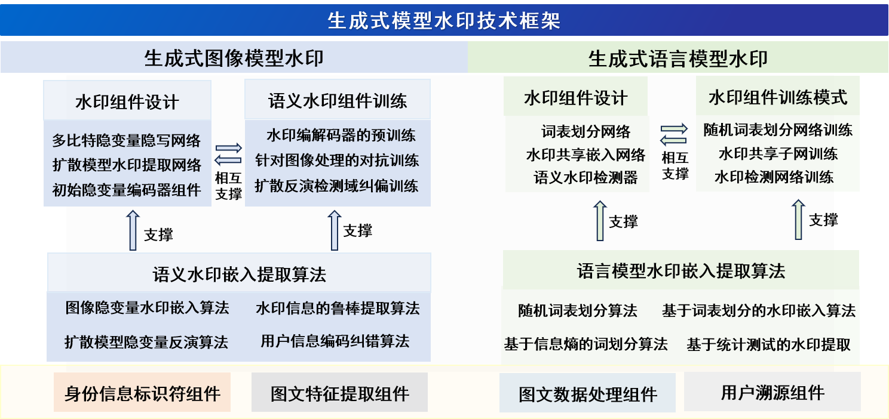
本作品《AIGC模型可信监管交易溯源平台》以水印嵌入提取算法、水印组件设计、水印组件训练作为生成式模型水印的基本框架，提出了面向生成式图像模型和生成式语言模型的水印嵌入方法。
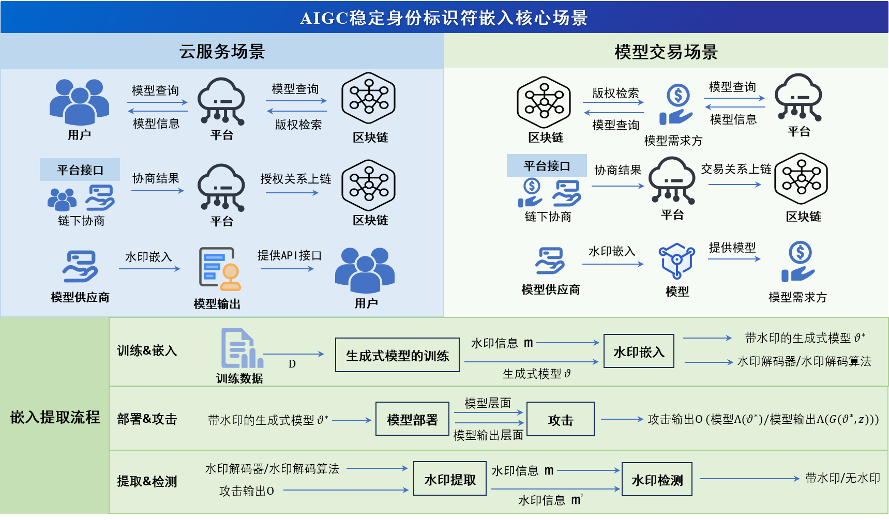
本作品中面向的核心场景有两种：
云服务场景:模型供应商通过API为用户提供生成式模型服务，场景的核心需求是将与模型高相关的水印信息嵌入模型输出，监管方可通过水印信息辨别模型类型与使用的用户信息。
模型交易场景：模型供应商将带有水印组件的模型售卖到模型需求方，场景的核心需求应在云服务场景的需求基础上，将模型和水印组件高耦合，保证模型需求方无法去除水印或规避水印的嵌入。
场景中AIGC稳定身份标识符嵌入涉及“训练&嵌入”、“部署&攻击”、“提取&检测”三阶段，水印嵌入算法将嵌入到模型中，这个过程应保证水印的高效嵌入、耦合性、保真度、鲁棒性、承载量。
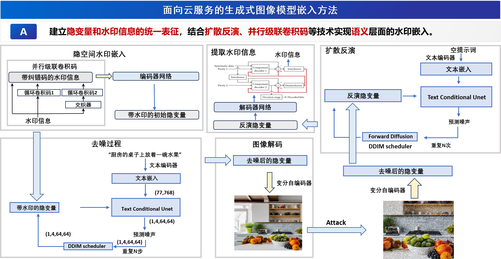
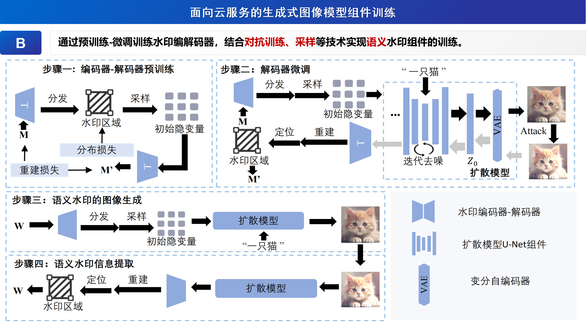
面向云服务场景本作品提出了一种“扩散指纹”的方法，通过建立隐变量和水印信息的统一表征，
结合扩散反演、并行级联卷积码等技术实现语义层面的水印嵌入，通过预训练-微调训练水印编解码器，
结合对抗训练、采样等技术实现语义水印组件的训练，保证了监管方可通过水印信息辨别模型类型与使用的用户信息。
面向云服务场景的扩散模型身份标识符嵌入
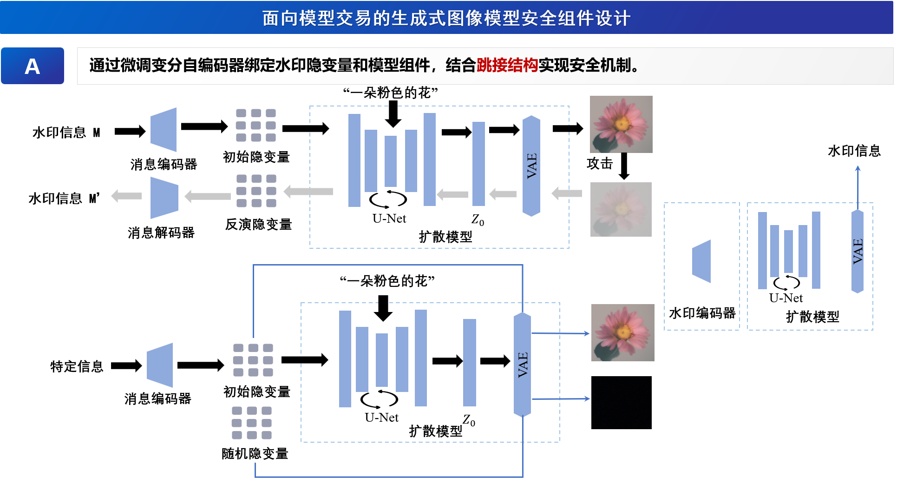
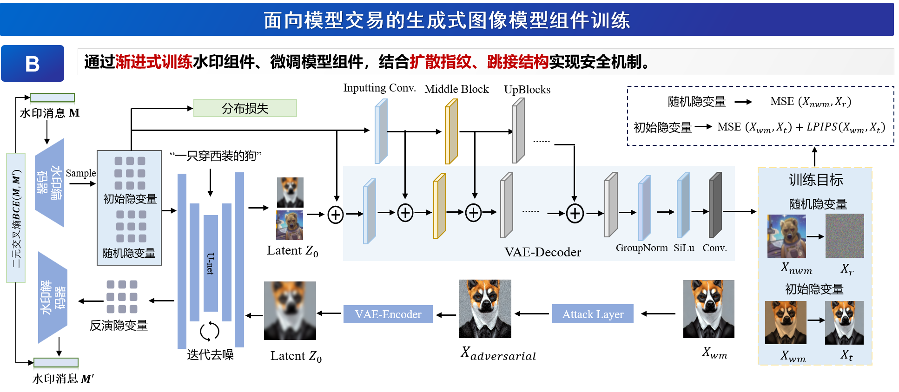
面向模型交易场景本作品在“扩散指纹”的基础上，通过微调变分自编码器绑定水印隐变量和模型组件，结合跳接结构实现安全组件的设计。
通过渐进式训练水印组件、微调模型组件，结合扩散指纹、跳接结构实现安全组件的训练。保证了将模型和水印组件高耦合，不可信用户无法去除水印或规避水印的嵌入。
面向模型交易场景的扩散模型身份标识符嵌入
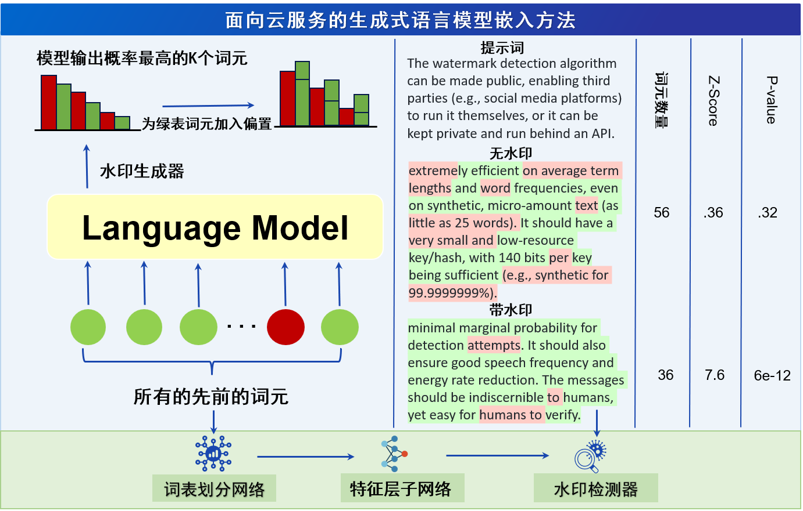
对于生成式语言模型，面向云服务场景本作品针对红绿词表水印公开算法存在的威胁(敌手在已知算法和词表的情况下，可以进行针对性修改)。
提出了一种黑盒水印嵌入模式，方法分为两阶段：1. 训练词表划分网络进行红绿词划分；2. 在特征层Subnet上训练水印检测器。该设计通过神经网络的黑盒特征，保证了
敌手在没有水印划分网络的情况下，无法对词表划分进行针对性修改，有效提升了当前大语言模型水印的安全性。
面向云服务场景的大语言模型身份标识符嵌入
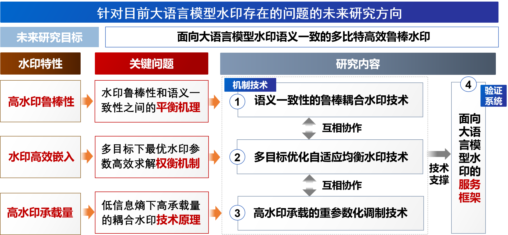
对于生成式语言模型的模型交易场景，本作品对现有针对大语言模型的水印方法进行了大量调研，表明面向模型交易场景当前的大语言模型水印尚不成熟。
主要面临以下挑战：
1.模型交易场景为保证对于多用户的溯源，往往需要高水印承载量，而语言模型水印相比图像水印信息熵低，实现高信息承载量难，如何在更为稀疏的特征空间中，通过精确调制水印嵌入参数，实现水印与文本语义的强耦合，同时保持较高的水印承载量，是一项亟待攻克的难题。
2.模型交易场景需要将水印嵌入模型中保证水印组件与模型的高耦合，而已有语言模型耦合水印组件方法往往会带来语言特征、词汇属性的损失，且水印嵌入效率低。
3.大语言模型面临语义一致性与水印鲁棒性之间的权衡。如何在不破坏模型原有生成能力的前提下，嵌入高耦合且具有语义一致性的水印，确保水印在抵抗检测攻击、修改攻击、复述攻击、模糊攻击等多种攻击时依然有效，同时保持其不可检测性，仍然是一个尚未被充分解决的难题。
本作品针对当前生成式语言模型针对模型交易场景存在的问题提出了未来可能的研究方向。
模型链上链下可信交易
针对模型交易场景，模型水印存在关键未解决的问题：模型资产登记主体身份难可信。模型水印技术缺乏对于模型资产主体验证方法，
需要可信技术支撑模型流通的业务场景。另一方面，不可信用户通过生成式模型可以高度仿真地生成多媒体内容，包括但不限于音频、视频和文本资料，这可能导致假新闻、个人名誉损害以及作品版权侵权等问题。
由于这些内容是由模型生成的，且缺乏直接的人为操作证据链，使得追责变得非常困难。
区块链作为可信的基础设置，可为模型流通提供信任基础架构，同时区块链的不可篡改性也为链上存证链下取证的追责机制提供了技术支持。
模型链上链下可信交易模块的核心目标为保证链上链下模型资产主体可信、模型版权可验证的模型交易机制和针对模型交易作恶(未授权转售、未授权商用)的追责机制，
保证链上链下模型交易的安全性、可信性和合规性。
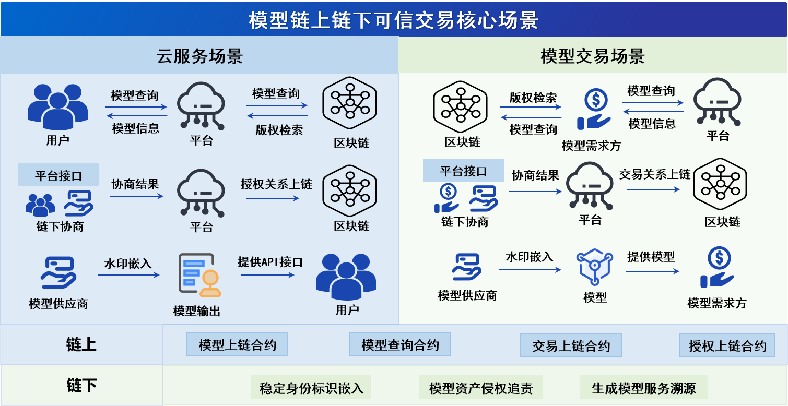
模型链上链下的核心场景中，平台提供稳定身份标识、模型资产侵权追责、
生成式模型服务溯源的技术支持，区块链上提供模型上链合约、模型查询
合约、交易上链合约、授权上链四种合约。用户、模型需求方的每一笔授
权关系与交易关系将储存在区块链中作为后续溯源的存证。
进行模型交易
生成式模型服务溯源机制
模型可能会被不可信的用户滥用，需要保证生成内容可追溯，尤其是减少生成式模型的恶意使用。
生成式模型的溯源机制涉及模型输出和模型在不可信域中流转往往会受到各种处理，这使得水印鲁棒性至关重要，
在输出层面，图像对于各类图像处理(包括色彩抖动、图像裁切、高斯模糊、高斯噪声、图像压缩...)应保持鲁棒、
文本对于各类文本处理(包括文本截取、文本改写、随机粘贴...)应保持鲁棒，在模型层面，水印应在模型剪枝、
模型蒸馏、模型微调具有鲁棒性，在功能层面，对于生成式模型的扩展功能，例如基于扩散模型的图像编辑、
图像生成、风格迁移、概念生成应具有鲁棒性。本作品通过链上存证链下取证的追溯模式保证生成模型应用可追溯、可监管。
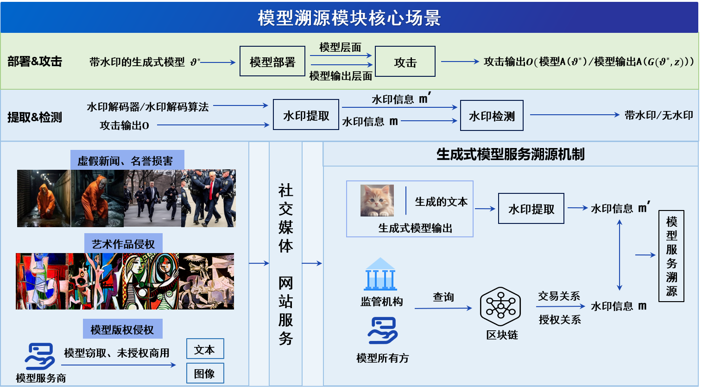
生成式模型服务溯源机制中，不可信用户通过生成式模型进行虚假新闻捏造、艺术作品侵权，
获取服务商模型进行非法商用。将模型输出发布到社交媒体或部署未授权的模型服务造成恶意事件。
模型服务商或监管方可通过调取本作品提供的接口对相关输出进行溯源，定位到具体模型与用户，
获取区块链的授权与交易存证作为证据链。
进行模型溯源